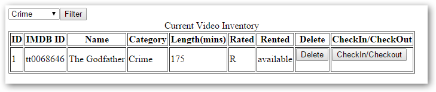

Submitting to the Database
Althought not required, I create new variables in the addVideo PHP file which are obtained from the $_SESSION array.
$newImdbID = $_SESSION['imdbID'];
$newName = $_SESSION['Title'];
$newRating = $_SESSION['Rated'];
$newCategory = $_SESSION['Genre'];
$newLength = $_SESSION['Runtime'];
$newPoster = $_SESSION['Poster'];
After checking that all of the variables have been received and are valid, we make similar calls to the SQL database as we did in assignment4-part2. The only difference is that the table name has changed and we have added the new table fields to the prepared statement.
/* Prepared statement, stage 1: prepare */
if (!($stmt = $mysqli->prepare("INSERT INTO videoInventoryImproved(imdbID,name,category,length,rated) VALUES (?,?,?,?,?)"))) {
echo "Prepare failed: (" . $mysqli->errno . ") " . $mysqli->error;
}
/* Prepared statement, stage 2: bind and execute */
if (!$stmt->bind_param("sssis", $newImdbID,$newName,$newCategory,$newLength,$newRating)) {
echo "Binding parameters failed: (" . $stmt->errno . ") " . $stmt->error;
}
if (!$stmt->execute()) {
echo "Execute failed: (" . $stmt->errno . ") " . $stmt->error;
}
The data is now added to the database as it would have been had we manually typed it into an HTML form similar to our workflow in assignment4-part2. We now make an additional call the the API. This time we want to spice up our user experience a bit. We will do this by calling the Poster API. Remember, we need an API key for this call. Alternatively, we could take the poster url from the array and render that to the screen. I had better reliability by using the Poster API call. Both will work, but I prefer the dedicated API call with the imdbID and API key.
//preferred method - making a call to the Poster API
<img src="http://img.omdbapi.com/?apikey=<?php echo $myKey?>&i=<?php echo $newImdbID?>" alt="Poster Image Not Found"/>
//alternative method - render the image from the array poster url value
<img src= "<?php echo $newPoster ?>" alt="Poster Image Not Found"/>
The end result is a movie added to our inventory system (written to the SQL database) with the IMDB ID, Name, Category, Length, and Rated database field values fetched from the OMDb API call.

There will also be a visual confirmation that we have added the correct movie with the OMDb Poster API call.

Please note: Not all movies will have an associated poster image. In such cases, you will not see an image rendered to the screen. Most every movie that I tested with did have an image. Older movies, mini-series, and television series were the less likely to provide an image.